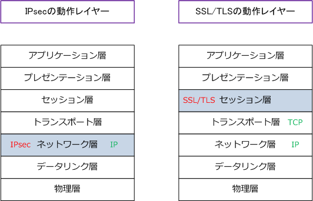
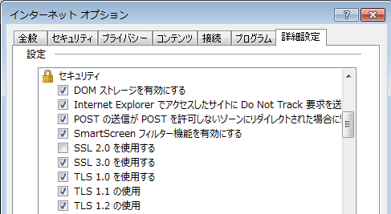
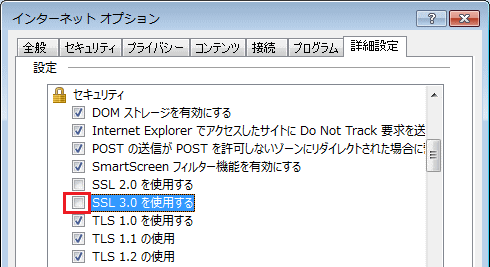
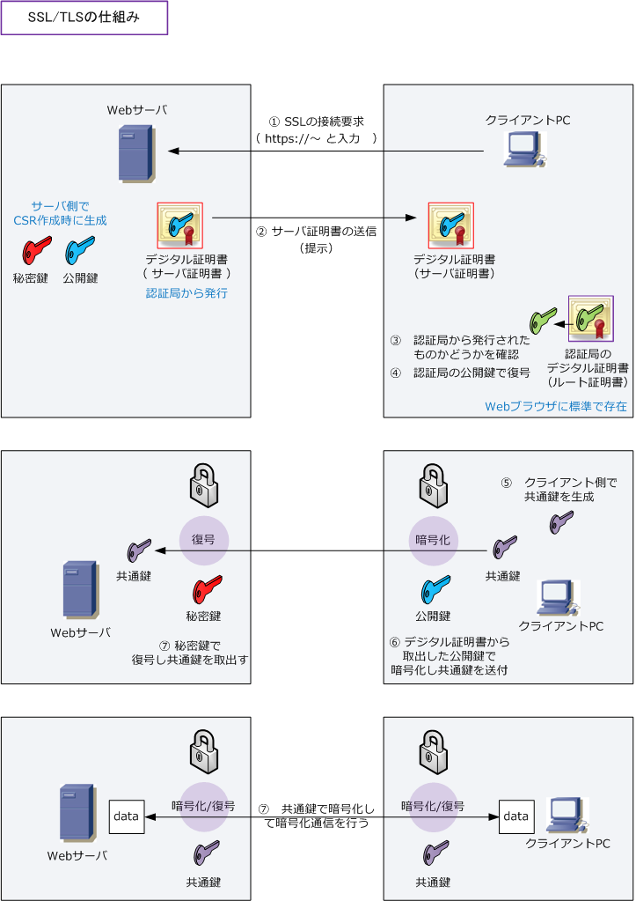

SSL/TLS
SSLとは
SSL（Secure Sockets Layer）は、インターネット上でデータを暗号化して送受信できるプロトコルです。 例えばクライアントPCとサーバ間のHTTPやFTPなどの通信において、クレジットカード情報の機密性の高い データを、SSLにより暗号化して安全にやりとりできます。なお、SSLでの暗号化は公開鍵暗号、秘密鍵暗号、 デジタル署名、デジタル証明書の技術を組み合わせ実現します。SSLでデータ改ざんやなりすましを防げます。
TLSとは
TLS（Transport Layer Security）は、SSLの後継プロトコルであり、SSLをもとに標準化させています。 現在ではTLSが使用されていますが、SSLの名称が広く使用されていたこともあり、TLSのことをSSLと 呼んだり、TLSのことをSSL/TLSと表記する場合があります。
TLSハンドシェイクのメッセージ
Client_Hello（仕様上の表記は ClientHello）はクライアントが対応するTLSバージョン、暗号スイートなどを提示するメッセージです。Server_Hello（ServerHello）はサーバが選択した条件を返します。TLS 1.3 では両者の鍵共有情報も鍵交換に使われ、サーバ認証や通信鍵の確立へ進みます。
SSL/TLSバージョン
現在の最新バージョンはTLS1.3です。SSLとTLSのバージョン、リリース年、脆弱性は以下の通りです。
| SSL/TLSバージョン | リリース年 | 脆弱性の問題、推奨、非推奨 |
|---|---|---|
| SSL 1.0 | - | リリース前に脆弱性が発見されたため公開されなかった。 |
| SSL 2.0 | 1994年 | 多くの脆弱性が発見されたため、Webブラウザでデフォルトで無効化された。 |
| SSL 3.0 | 1995年 | 2014年に重大な脆弱性であるPOODLEが発見されたため、非推奨バージョンとなる。 |
| TLS 1.0 | 1999年 | 2021年3月、RFC8996によりTLS 1.0を使用しないことが呼びかけられる。 |
| TLS 1.1 | 2006年 | 2021年3月、RFC8996によりTLS 1.1を使用しないことが呼びかけられる。 |
| TLS 1.2 | 2008年 | 推奨。ハッシュアルゴリズムにSHA-256追加。GCM、CCMのcipher suiteが利用可。 |
| TLS 1.3 | 2018年 | 最も推奨。forward secrecyではない・認証付き暗号ではない cipher suite の廃止。 |
SSL/TLSの動作するレイヤ
SSLはセッション層とトランスポート層の境界で動作します。なお、IPsecはネットワーク層で動作します。

SSL/TLSの実装例
Webブラウザによる通常のインターネット通信（http：//～）では暗号化されずにデータが送受信されます。 暗号化されないということは送受信されるデータが第三者に傍受される可能性がありますが、例えば以下の 「Yahoo!天気情報」のWebページを閲覧している送受信データが第三者に傍受されても全く問題ありません。
しかし、クレジットカード番号やパスワードなど第三者に傍受されてはいけないデータをやりとりする場合は セキュアなインターネット通信（https：//～）を行う必要があります。このhttpsとはHTTP over SSL/TLS のことです。例えば以下URLの楽天証券のWebページでは、送受信されないようにトップページやログイン後 のページ全てが https://～ となっており、Webサーバとの間でセキュアな通信をしていることが分かります。
※ 例えば、IEEE802.1XのEAP-TLSでは「LANにおいてはTLSが活躍」していることが分かりますね。
SSLとTLSの互換性
SSL（Secure Socket Layer）は、インターネット上でデータを暗号化し送受信することができるプロトコル。 SSLはNetscape Communicationsが開発しましたが、SSL3.0を元にしたTLS1.0がRFCに定められています。 SSLとTLSは大枠の仕組みは同じと言えますが互換性がありません。しかし、現在の主流なWebブラウザでは SSLとTLSの両方に対応しており両方が有効になっています。

現在のWebブラウザでは、SSLの後継であるTLSを使用するように動作しますが、サーバ側がSSL3.0にしか 対応していない場合はSSL3.0で通信するため、この設定のように両方にチェックをして有効にしておきます。
SSL3.0の脆弱性問題 - 2014年10月
Googleの研究者がSSL3.0に深刻な脆弱性を発見しました。SSL3.0の欠陥を突く攻撃手法を「POODLE」と 名付けています。POODLEでは、暗号化通信をSSL3.0へと強制的にフォールバックさせて、SSL3.0の欠陥 を突いて、Cookie情報を盗み出すという手法です。Cookieが盗まれると、例えばWebメールのアカウントに 不正にアクセスされる可能性があります。確実な回避策は以下のとおり、ブラウザでSSL3.0を無効化させる ことですが、以下の設定をするとSSL3.0でしか動作しないサーバとは通信できないようになってしまいます。

POODLEの攻撃を実現するために中間者攻撃が必要なので、攻撃対象となるPC端末がオープン認証の 公衆Wi-Fiなどの公共ネットワークを経由してインターネット通信している際に注意が必要となります。
SSLの仕組み
クライアントPCのWebブラウザとWebサーバは、複数の技術を組み合わせて以下のフローでSSL通信します。 SSLでは「公開鍵暗号 / 共通鍵暗号」と「デジタル署名」と「デジタル証明書」技術を全て使用しています。
| 項番 | 説明 |
|---|---|
| ① | クライアントPCから、WebサーバにHTTPSアクセスする。( = SSLの接続要求 ) |
| ② | Webサーバから、クライアントPCにサーバ証明書を提示する。 |
| ③ | クライアントPCは、その証明書に署名したCAのルート証明書をデフォルトでWebブラウザにインストールされている 「信頼できるルート証明書」の一覧から検索を行う。（そのルート証明書がない場合、ブラウザで警告が表示される。） |
| ④ | そのルート証明書がある場合、サーバ証明書内のデジタル署名を、そのルート証明書内に含まれているCAの 公開鍵で復号して、その公開鍵が正規のサーバのものであるかどうかを検証する。 |
| ⑤ | クライアントPCは、共通鍵を生成します。※ 正確には、共通鍵の基となる情報（プリマスターシークレット）を生成。 |
| ⑥ | クライアントPCは、サーバ証明書に含まれていた公開鍵を使用して、共通鍵を暗号化した上でサーバに送信する。 |
| ⑦ | Webサーバは、クライアントPCから受信した暗号化された共通鍵を、自身の秘密鍵により復号して取り出す。 |
| ⑧ | クライアントPCとWebサーバは、この共通鍵によってデータを暗号化して安全にSSL通信を行う。 |
以下の①～④の詳細説明（認証局を含めた詳細説明）はデジタル証明書の仕組みで解説した①～⑥の通り。

PCとWebサーバ間のSSLトンネルはソケットでセッションを識別しているので、同時に複数のSSLトンネル を確立できます。ソケットとは「送信元/宛先IPアドレス、送信元/宛先ポート番号の組み合わせ」のことです。
当サイトでの技術解説では、TLSで使用するデジタル証明書はPCにインストールすることを前提にした解説が 主となっていますが、例えば、TLSで使用する個人認証用のデジタル証明書は、ICカードにも格納することが でき、利用するPCを特定のPCに限定する必要はありません。